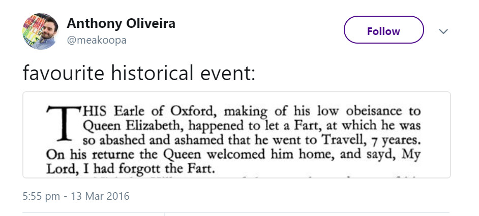
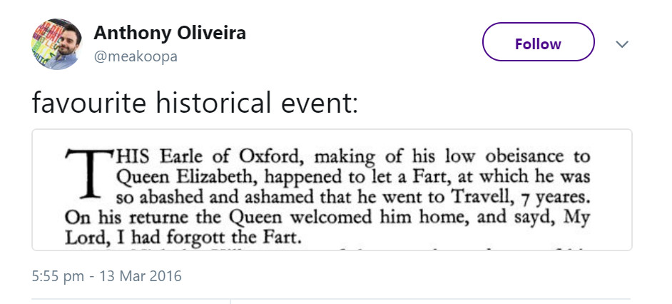

Meme-inspired poetry
My Lord, I Had Forgott The Fart
The meme the poem is based on is here

Queen Lizzie, once upon a time,

Was making rounds in the land,
A Duke, a Baron… oh, what chime
Disturbs our lady from her planned
Observance of obeisance? That
The Earle of Oxford, present there
And at our Queen’s table sat,
With conversation’s easy air
Forgot himself in gentle art
And happened to release a Fart.
“O woe me,” the Earle then cried,
“I shan’t live down this regret,
But move to Channel’s other side
Where they have no etiquette!
I shall forever leave my home,
For I forsook the noblest one!”
He left the table, saying so,
But Lizzie’s lunch was not yet done;
The queen had stayed behind to eat
All kinds of soups, desserts, and meats.
The Earle had travelled seven years;
He was ashamed, so he had run.
He went to France, he went to Greece,
Finally felt like he had won:
He was a changed man of learning;
He studied sciences of old.
No matter how much he was yearning,
He never traded sense for gold.
‘Twas time enough away from home,
He went to London right from Rome.
Queen Lizzie, meanwhile, had some time
To think about the Earle’s mistake;
She mentioned not the horrid crime
To anyone in the estate:
The Lady that she was, she felt
That it would benefit them both
If Earle came back and what they smelt
Were so forgotten that none quoth
A thing about it. Earle came back,
Queen Lizzie saw a changed man;
She was impressed with this new Jack
Of all trades, bid him welcome; then
She said what he would take to heart,
“My lord, I had forgott the fart.”
Last edit October 4th 2018